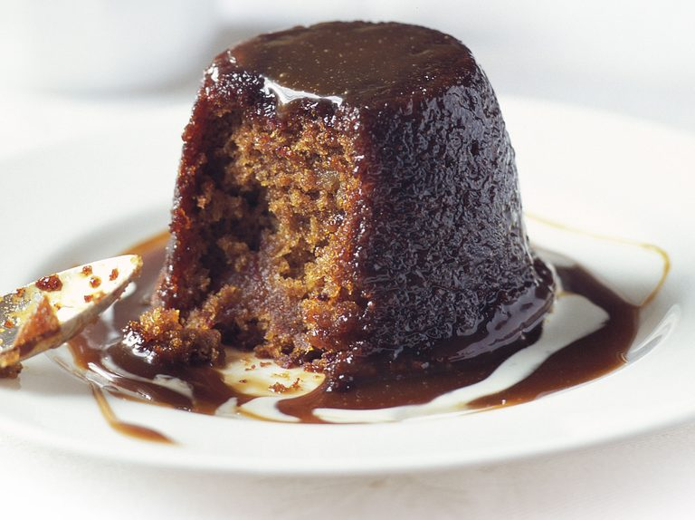

Pudding

Description
Pudding is a boiled, steamed or baked dish made with various sweet (or sometimes) savoury ingredients added to the mixture, typically including milk, eggs, and flour (or other starchy ingredients such as suet, rice, semolina, etc.), enclosed within a crust made from such a mixture.
Ingredients
- Milk
- sugar
- Cornstarch
- Salt
- Vanilla
- Butter
Steps
- Heat the milk until bubbles form at the edges.
- Mix the sugar, cornstarch, and salt together in a small bowl.
- Add the sugar mixture to the milk, a little at a time, stirring until thick.
- Remove the pudding from the heat, then stir in the butter and vanilla.